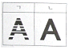
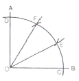
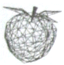

컴퓨터그래픽스운용기능사 (2011-04-17 기출문제)
1과목: 산업디자인 일반
1. 율동(rhythm)의 일부로, 명도와 채도의 단계에 일정한 변화를 주거나 대상물의 크기에 변화를 주어 생동감 있는 효과를 낼 수 있는 것은?
- 강조
- 변칙
- 점증
- 반복
(정답률: 62%)

2. 다음 중 커뮤니케이션 매체를 전달하는 형식이 설득적, 강화적 전달이 아닌 것은?
- 포스터
- 광고
- 영화
- 통계도표
(정답률: 67%)
3. 디자인에서 이미지를 전달하기 위한 표현기법의 첫 단계는?
- 포토 리터칭(Photo Retouching)
- 모델링(Modeling)
- 렌더링(Rendering)
- 아이디어 스케치(Idea Sketch)
(정답률: 89%)
4. 다음 그림에서 "ㄱ"의 끊어진 부분이 "ㄴ"처럼 완전한 형으로 인식되는 것은 게슈탈트 법칙 중 어느 것에 해당되는가?

- 단순성의 법칙
- 연속성의 법칙
- 유사성의 법칙
- 폐쇄성의 법칙
(정답률: 70%)
5. 산업 박람회와 관련한 디자인 사조가 알맞게 짝지어진 것은?
- 1851년 런던 산업 박람회 - 미술공예운동
- 1876년 필라델피아 엑스포-유선형 양식
- 1900년 파리 엑스포-신조형주의 운동
- 1925년 파리 엑스포-아르누보 운동
(정답률: 63%)
6. 다음 중 제품디자인에서 아이디어를 탐색하는 방법으로 적합하지 않은 것은?
- 브레인스토밍
- 상관표 작성
- 시네틱스
- 형태학적 차트 작성
(정답률: 52%)
7. 선의 조형적 표현 방법 중 단조로움을 없애 주고 흥미를 유발시켜 활동적인 분위기를 조성해 주거나 지나치게 많이 사용하면 불안정한 느낌을 주는 것은?
- 수직선
- 수평선
- 사선
- 포물선
(정답률: 79%)
8. 렌더링을 할 때 투명성이 좋아 유리, 목재, 금속 재질의 질감을 표현하는데 쓰이며, 물의 양을 가감하여 명도 조절이 가능한 재료는?
- 마카
- 파스텔
- 수채화물감
- 포스터 칼라
(정답률: 78%)
9. 다음 중 포장 디자인의 표면 디자인 구성요소가 아닌 것은?
- 색채
- 심벌, 로고 및 타이포그라피
- 레이아웃
- 렌더링
(정답률: 62%)
10. 현대디자인 운동의 실질적인 모체가 되었고, 산업제품의 표준화와 합리적 질서를 주장하며 미술과 공업, 상업의 각 분야에서 최고의 지혜를 집결하여 생활에 사용되는 생산품의 질을 향상시키는데 목표를 둔 디자인 운동은?
- 바우하우스
- 독일공작연맹
- 데스틸
- 미술공예운동
(정답률: 53%)
11. 포장디자인의 기본적 고려사항이 아닌 것은?
- 쌓기 쉽게 디자인 되어야 한다.
- 상품을 안전하게 보호해야 한다.
- 상품의 내용이나 정보를 명확히 하여야 한다.
- 고급화를 위하여 정교하고 복잡하게 디자인 하여야 한다.
(정답률: 90%)
12. 기업 이미지 통합정책(CIP)에 관한 설명 중 적절하지 않은 것은?
- CIP는 기업의 모든 디자인 활동에 통합된 시각적 이미지를 갖게 하여 상승효과를 거두는 것을 의미한다.
- 영국에서는 원해 CIP 개념이 그래픽 디자인을 위주로 하는 하우스 스타일로 간주되고 있다.
- 기업의 형태와 구성원의 행동양식에서 품질화를 추구하려는 것을 이념적 동질화(MI)한다.
- CIP를 기업 활동의 시각적인 측면보다는 총체적인 기업경영의 문제로 해석하려는 경향이 있다.
(정답률: 41%)
13. 인간의 생활공간에 대한 설명 중 적절하지 않은 것은?
- 사람들이 생활의 많은 시간을 보내는 공간을 때와 장소에 따라서 그 역할에 가장 적합하게 구성하는 것이 실내 디자인이다.
- 생활공간은 그 성격에 따라 사적인 생활권과 공공의 생활권으로 나눌 수 있다.
- 개성이나 취향이 최대한 반영되어 구성되는 주택은 공공의 생활권에 속한다고 할 수 있다.
- 작업공간에서 일의 능률이 중시되고, 개인의 개성은 비교적 제한한다.
(정답률: 67%)
14. 19세기 말 오스트리아를 중심으로 과거의 양식을 답습하는 것에 반대하여 일어난 신예술운동은?
- 유켄트 스틸(Jugend Stil)
- 로코코(Rococo)
- 시세션(Secession)
- 바우하우스(Bauhaus)
(정답률: 66%)
15. 디자인 정책으로 적합하지 않은 것은?
- 모든 디자인 문제를 시장과 환경 분석에 따라 고객의 욕구를 충족 한다.
- 장래의 발전을 위한 장. 단기 계획을 수립한다.
- 제품 및 광고매체에 통일된 기업 이미지를 부여한다.
- 디자이너의 개성적인 이미지만을 살려 표현한다.
(정답률: 86%)
16. 디자인의 요소에 대한 설명 중 틀린 것은?
- 점-크기는 있고 위치는 없는 것
- 선-점이 이동한 것
- 면-선이 이동한 것
- 입체-면이 이동한 것
(정답률: 80%)
17. 상업을 목적으로 한 매장 디스플레이 분류의 유형과 가장 거리가 먼 것은?
- 상점 외부 디스플레이
- 오브제 디스플레이
- 쇼 윈도우 디스플레이
- 상점 내부 디스플레이
(정답률: 68%)
18. 형태에 대한 설명 중 틀린 것은?
- 자연형태는 사람의 의지와 요구에 관계없이 형성된다.
- 인위형태는 사람의 의지로 형성된다.
- 형태의 범주에서 다루는 것은 점, 선, 면, 입체가 있다.
- 점, 선, 면의 구분은 색으로 한다.
(정답률: 83%)
19. 디자인의 심미성을 성립시키는 미의식에 대한 설명으로 틀린 것은?
- 매우 주관적인 것으로 개개인에 따라 차이가 있다.
- 시대나 국가, 민족에 따라 공통의 미의식이 있다.
- 디자인할 때 모든 사람의 미의식이 일치되도록 해야 한다.
- 스타일이나 색의 유행 등도 대중이 공통적으로 느끼는 미의식이라 할 수 있다.
(정답률: 84%)
20. 문자 위주로 표현된 편집 디자인이 아닌 것은?
- 학술지
- 문학지
- 그래픽 잡지
- 단행본
(정답률: 84%)
2과목: 색채 및 도법
21. 저드(D.B.judd)의 색채조화 원리가 아닌 것은?
- 삼속성의 원리
- 질서의 원리
- 친근성의 원리
- 유사성의 원리
(정답률: 69%)
22. 다음 색 회색(N3) 배경 위에서 명시성이 가장 높은 것은?
- 녹색
- 노랑
- 백색
- 보라
(정답률: 65%)
23. 그림과 같이 직각을 3등분 할 때, 다음 중 선의 길이가 같지 않은 것은?

- OD
- OC
- CF
- EF
(정답률: 83%)
24. 도면 표현기법 중 'SR 200' 을 옳게 설명한 것은?
- 원의 지름이 200mm이다.
- 원의 반지름이 200mm이다.
- 구의 지름이 200mm이다.
- 구의 반지름이 200mm이다.
(정답률: 61%)
25. 다음 중 배색에 따른 느낌이 잘못 짝지어진 것은?
- 유사색상의 배색-완화함, 상냥함, 건전함
- 반대색상의 배색-똑똑함, 생생함, 화려함
- 유사색상의 배색-차분함, 시원함, 일관됨
- 반대 색조의 배색-강함, 예리함, 동적임
(정답률: 55%)
26. 먼셀 색체계에서 고명도에 높은 색은?
- N1~N3
- N4~N6
- N7~N9
- N11~N14
(정답률: 47%)
27. 다음 중 채도가 가장 높은 색은?
- 유채색
- 무채색
- 검정색
- 순색
(정답률: 64%)
28. 간상체와 추상체의 특성과 관계없는 현상은?
- 암순응
- 이성체
- 스펙트럼 민감도
- 푸르킨예 현상
(정답률: 59%)
29. 2소점법 중, 2개의 측면을 똑같이 강조하여 보이도록 하는 것이 특징이며, 양면이 모두 흥미 있는 대상물에 알맞은 투시도법은?
- 평행 투시도법
- 45˚ 투시도법
- 30˚~60˚ 투시도법
- 사각 투시도법
(정답률: 53%)
30. 다양한 색의 작은 점이나 무수한 선이 조밀하게 배치되어 먼 거리에서 보면 색이 혼색되어 보이는 혼색 방법은?
- 회전혼색
- 감법혼색
- 계시혼색
- 병치혼색
(정답률: 75%)
31. 2소점 투시도의설명으로 틀린 것은?
- 수평으로 평행한 선은 모두 좌우 각각의 소점으로 모인다.
- 수직 방향의 선은 각기 수직으로 평행한다.
- 유각 투시도, 성각 투시도라고도 한다.
- 긴 복도, 곧게 뻗은 철길, 가로수 등을 표현하기에 적합하다.
(정답률: 61%)
32. 제3각법이 제1각법에 비하여 가진 장점이 아닌 것은?
- 물체를 본 쪽에 그림을 배치하므로, 물체의 관련도를 대조하는데 편리하다.
- 치수를 비교하는게 편리하고, 모양을 이해하기 쉽다.
- 복잡한 모양에 대하여 보조 투상도를 이용하여 정확히 표현할 수 있다.
- 평면도가 정면도의 아래쪽에 위치하므로 도면을 이해하기 쉽다.
(정답률: 58%)
33. 가산 혼합에 관한 설명 중 틀린 것은?
- 빛의 혼합을 말한다.
- 3원색을 혼합하면 흰색이 된다.
- 혼합할수록 명도가 높아진다.
- 2색을 혼합하면 2색의 중간명도의 회색이 된다.
(정답률: 73%)
34. 무대디자인과 상품 진열 등에서 조명색을 결정하는 광원의 성질은?
- 투과성
- 연속성
- 반색성
- 연색성
(정답률: 43%)
35. 제도에 주로 사용되는 한글 서체는?
- 명조체
- 고딕체
- 이탤릭체
- 샘물체
(정답률: 79%)
36. 제도에서 물체가 보이지 않는 부분을 표시할 때 사용하는 선은?
- 실선
- 쇄선
- 파단선
- 파선
(정답률: 56%)
37. 색의 잔상에 관한 설명이 틀린 것은?
- 잔상은 원래 자극의 세기, 관찰시간과 크기에 비례한다.
- 주위색의 영향을 받아 주위 색에 근접하게 변화하는 것이다.
- 주어진 자극이 제거된 후에도 원래의 자극과 색, 밝기가 같은 상이 보인다.
- 주어진 자극이 제거된 후에도 원래의 자극과 색, 밝기가 반대인 상이 보인다.
(정답률: 36%)
38. 다음 한쪽 단면도(반 단면도)에 대한 설명 중 옳은 것은?
- 비대칭형인 물체의 내부를 표현하기에 적합하다.
- 도형 전체가 단면으로 표시된 것이다.
- 물체의 필요한 부분만 단면으로 표시한 것이다.
- 대칭 중심선의 1/4를 단면으로 표시한다.
(정답률: 48%)
39. 다음 중 색채조절을 옳게 설명한 것은?
- 물감색의 혼합을 적절히 하는 것이다.
- 색채를 통해 쾌적성, 일의 능률 등을 향상시키는 것이다.
- 포스터를 제작할 때 그 명시도를 높이는 말이다.
- 디자인 작품 제작에 쓰이는 말이다.
(정답률: 52%)
40. 색의 주목성에 관한 설명으로 틀린 것은?
- 고채도보다 저채도 색의 주목성이 높다.
- 한색보다 난색의 주목성이 높다.
- 노랑과 검정의 배색이 주목성의 대표적인 예이다.
- 주의를 기울이지 않더라도 사람의 시선을 끌어 눈에 띄는 속성을 말한다.
(정답률: 74%)
3과목: 디자인 재료
41. 스트리퍼블(strippable) 페인트의 설명으로 잘못된 것은?
- 도장재의 더러움 방지를 위해 일시적으로 사용한다.
- 필요할 때 간단히 벗겨낼 수 있다.
- 비닐계 수지이다.
- 얇게 도장해야 한다.
(정답률: 61%)
42. 다음 중 금속의 열처리 방법이 아닌 것은?
- 담금질(quenching)
- 뜨임(tempering)
- 불림(normalizing)
- 연마(polishing)
(정답률: 50%)
43. 목재의 심재에 대한 설명이 옳은 것은?
- 무르고 연하며 수액과 탄력성이 많다.
- 껍질 쪽의 옅은 부분을 말한다.
- 무거우며 내구성은 풍부하고 일반적으로 질이 좋다.
- 변형이 심한 편이나 갈라짐은 심하지 않다.
(정답률: 67%)
44. 현상에 의한 문제점 중 현상된 상이 부분적으로 밝게 나타나는 경우의 원인은?
- 현상액과 정착액의 온도차가 심할 때
- 현상 시간이 너무 길었을 때
- 현상액이 충분히 채워지지 않았을 때
- 현상 온도가 높았을 때
(정답률: 48%)
45. 종이의 특성을 설명한 내용 중 틀린 것은?(오류 신고가 접수된 문제입니다. 반드시 정답과 해설을 확인하시기 바랍니다.)
- 종이의 세로 방향은 강하고, 가로 방향은 약하다.
- 활엽수 펄프는 길고 좁으며, 침엽수 펄프는 짧고 약하다.
- 종이의 강도는 섬유의 물리적, 화학적, 작용에 의해 좌우된다.
- 종이의 함수율은 적을 때는 6%, 많을 때는 10%정도가 된다.
(정답률: 40%)
46. 발포 플라스틱을 소재로 한 모델의 표면에 직접 착색재료로 적합하지 않은 것은?
- 아크릴 컬러
- 수성 페인트
- 포스터 컬러
- 래커 페인트
(정답률: 36%)
47. 안료와 접착제를 발라서 만들며, 강한 광택을 입힌 종이로 사진관이나 원색판의 고급인쇄에 쓰이는 것은?
- 그라비어지
- 로루지
- 모조지
- 아트지
(정답률: 67%)
48. 학명은 오룸(aurum)으로 아침의 태양 광선을 의미한다. 화학적으로 모든 금속 중 안정된 금속으로 공기 속이나 물속에서도 영구히 변하지 않으며, 귀금속 중 가장 귀족적인 성질을 가진 금속은?
- 금
- 백금
- 은
- 팔라듐
(정답률: 63%)
4과목: 컴퓨터 그래픽스
49. 다음 그림과 같이 3차원 그래픽에서 오브젝트를 수많은 선의 모임으로 표시하며 입체감을 나타내는 모델링 기법은?

- 와이어 프레임 모델링
- 표면 모델링
- 솔리드 모델링
- 프렉탈 모델링
(정답률: 79%)
50. 색상 범위(Color Gamut)의 컬러 표현에서 표현영역이 가장 광범위한 것은?
- 레이져 컬러출력 인쇄물
- RGB컬러 모니터
- 고해상 CMYK인쇄물
- 잉크젯 인쇄물
(정답률: 57%)
51. 애니메이션 제작에서 두 개의 키프레임 이미지 사이의 중간 단계 프레임을 연하는 과정은?
- 신서사이징(Synthesizing)
- 이미지 프로세싱(Image processing)
- 레이트레이싱(Ray-tracing)
- 인 비트위닝(In-betweening)
(정답률: 50%)
52. 다음 중 픽셀의 설명으로 틀린 것은?
- 픽셀은 이미지를 구성하는 최소 단위이다.
- 종횡으로 많은 수의 픽셀이 모여 문자 또는 그림을 형성한다.
- 픽셀은 각각의 위치 값을 가진다.
- 픽셀은 색에 따라 다양한 크기를 가진다.
(정답률: 76%)
53. 포토샵의 필터 중 하프톤의 효과나 모자이크 효과를 얻을 수 있는 가장 적합한 필터 기능은?
- Blur
- Brush Strokes
- Distrot
- Pixelate
(정답률: 57%)
54. 물체가 화면상에 식물처럼 표현되거나 그려지는 방식으로 광원은 그림자를 생성할 것인가, 표면의 질감은 어떻게 표현할 것인가, 광원과 표면은 어떤 식으로 상호 작용할 것인가. 하는 것을 결정하여 표현하는 작업은?
- 렌더링(Rendering)
- 매핑(Mapping)
- 제도(Drafting)
- 화상워핑(Image warping)
(정답률: 53%)
55. 다음의 디자인 프로세스 과정 중 컴퓨터가 직접적으로 대신할 수 없는 과정은?
- 드로잉 작업
- 이미지 표현 작업
- 아이디어 발상
- 페인팅 작업
(정답률: 88%)
56. 그래픽 사용자 인터페이스를 제공하는 컴퓨터시스템에서 각각의 프로그램이나 명령들을 작은 형태로 만들어 놓은 것은?
- Icon
- File
- Bitmap
- ld
(정답률: 76%)
57. 다음 컴퓨터그래픽스의 이용 효과와 거리가 먼 것은?
- 디자인상에서 발생할 수 있는 오류를 사전에 방지할 수 있다.
- 디자인 전개의 다양화로 소품종 다량 생산이 용이해졌다.
- 신속한 도면 설계와 수정 및 변형이 자유로운 유동성이 있다.
- 설계 기법의 표준화로 생산성 향상을 가져올 수 있다.
(정답률: 52%)
58. 모니터에 나타난 도형이나 그림을 35mm 슬라이드에 저장하는 출력장치는?
- 플로터
- 필름 레코더
- 레이저 프린터
- 스캐너
(정답률: 65%)
59. 컴퓨터의 기억장치 중 전원이 단절되면 존재하던 모든 정보를 잃게 되는 기능을 가진 것은?
- ROM
- CPU
- FDD
- RAM
(정답률: 64%)
60. 다음 중 2D 그래픽 소프트웨어가 아닌 것은?
- 포토샵(Photoshop)
- 페인터(Painter)
- 일러스트레이터(Illustrator)
- 스트라타 스튜디오 프로(Strata Studio Pro)
(정답률: 82%)